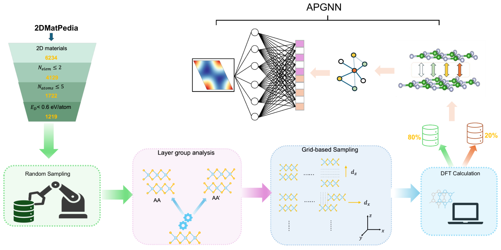
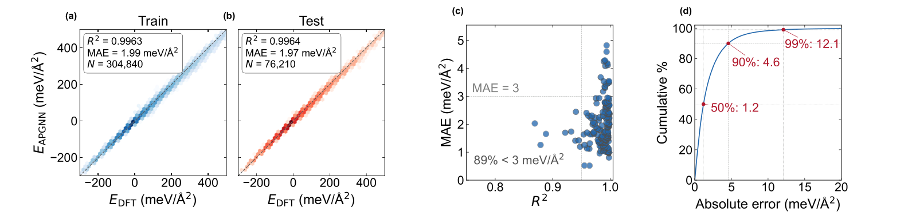
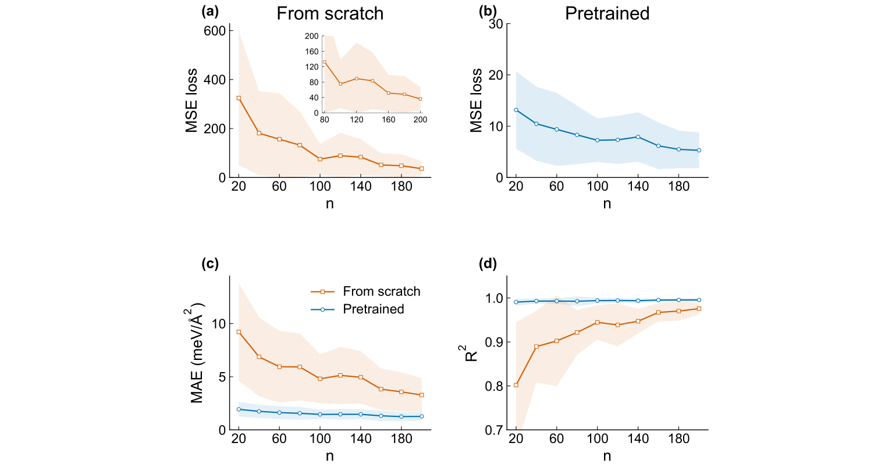
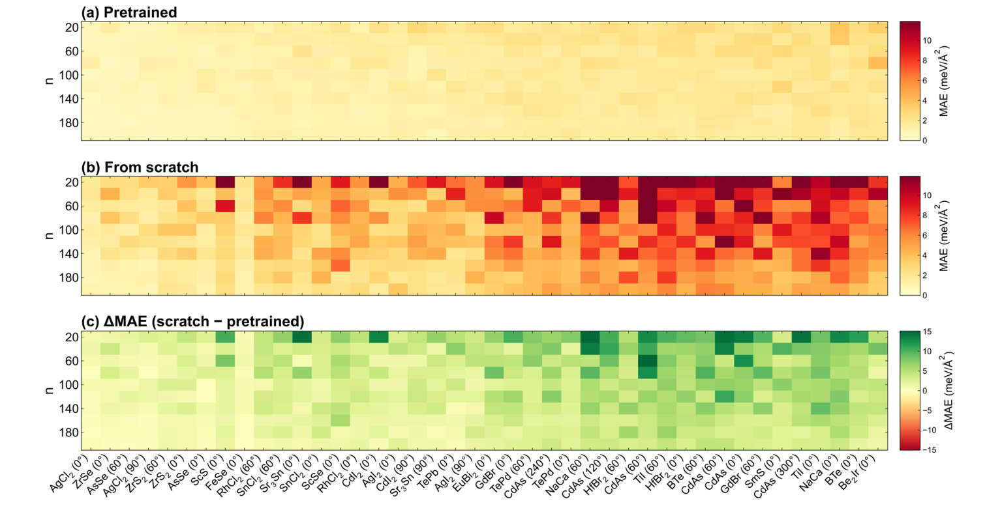
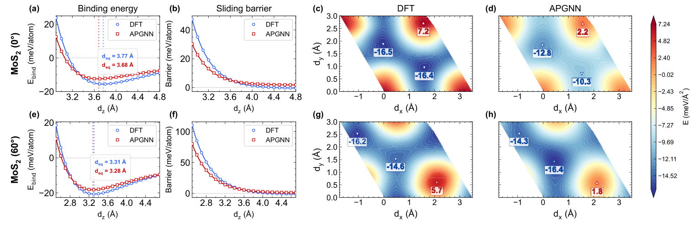

APGNN：以跨层原子对为节点，用少量DFT点重建新材料的层间势能面
论文原文 ↗原文：Suyun Wang、Zheng Wu、Bing Yu、Jun Wang、Fengqi Song、Jinlan Wang、Jianguo Wan，Transferable Atom-Pair Graph Neural Network for Few-Shot Reconstruction of Rigid Homobilayer Sliding Potential-Energy Surfaces，The Journal of Physical Chemistry Letters，2026，DOI：10.1021/acs.jpclett.6c02241。〔〕
把两片相同的二维材料叠起来，上层横向挪一点、转一个角度或改变层间距，能量就会变化。这张随相对位置变化的层间势能面，决定哪种堆垛稳定、滑过去要跨多高势垒，也为摩擦、滑移铁电和莫尔结构分析提供能量输入。
困难是，完整势能面需要同时扫描横向位移和层间距，一种材料往往就要数百到数千次 DFT 计算。已有解析层间势可以很快计算，但换材料通常需要重新拟合。作者要解决的问题是：能否先从多种材料学到层间相互作用的共性，再只用新材料的少量能量点补充信息，恢复整个势能面？
APGNN 的切入点在表示方式：把下层一个原子与上层一个原子组成的“跨层原子对”作为图节点，让网络直接围绕界面上控制能量起伏的相互作用组织学习。
一、从双层结构到可迁移的势能面
先建立跨材料数据，再区分预训练与新材料适配
作者从2DMatPedia的单层结构出发，筛选元素数、原胞大小和分解能，取得候选材料，再通过层群对称性分析列出不等价的堆垛方式。对每种堆垛，用三个变量描述相对结构：横向位移 dₓ、dᵧ，以及层间距 d_z。这里研究的是刚性同质双层，即上下层由同种材料组成，扫描时各层内部原子位置保持固定。
每个位移组合对应一个双层构型，作者用 PBE-D2 计算其能量，再扣掉两个孤立单层的能量、除以面内面积，得到单位面积层间结合能。这样，不同大小的晶胞可以用统一强度量比较。

图1｜单层筛选、对称堆垛、位移与间距扫描提供 DFT 标签，原子对图网络学习单位面积层间结合能。
最终基准包含112种材料，其中89种用于开发预训练模型，另23种作为未见材料，检验少样本适配。前者包括152种堆垛、约38.1万个构型；后者包括42种堆垛、约11.6万个构型。
对于一种新的目标材料，流程分成两段：先复用89种材料上的预训练权重，再随机选目标堆垛的少量构型计算能量，微调模型，最后预测其余密集位移网格。这里的“少样本”指后面这批目标材料专属标签；跨材料共性已经通过预训练学习。
原子对怎样组成图，信息又怎样传递
取下层原子 aᵢ 和上层原子 aⱼ，连同需要考虑的周期镜像，组成一个图节点。节点是否纳入图，由原子间距离与范德华半径确定；算法对每个原子对调整距离范围，使它至少有一个周期镜像进入表示。
每个节点记录两原子的表列性质、相对几何，以及随距离衰减的量。作者分别使用总距离和垂直距离相关的特征，使模型能够区分同样远却方向不同的跨层接触。节点共有38维特征。
如果两个原子对共享一个真实原子，就在它们之间连边。例如，底层同一个原子可以同时面对上层多个原子，这些跨层接触会通过共享原子彼此影响。GraphSAGE 消息传递网络沿这种连边汇总邻居信息，使一个接触的能量表示能参考周围接触的排列。
随后，将所有节点贡献相加并按晶胞面积归一化，得到单位面积能量；相同界面换成面内复制的超胞时，预测值保持一致。为输出平滑、周期性的势能面，作者还将图预测投影到连续输出层：横向使用二阶傅里叶基，即满足晶格周期的正弦、余弦函数，层间距方向使用三次平滑样条。两者共同给出连续的能量面及其导数。
网络先学到源材料中的能量变化

图2｜a、b 比较预测能量与 DFT；c 分别统计各材料—堆垛组合；d 展示绝对误差的累积分布。
在89种源材料的构型级测试中，平均绝对误差为1.97 meV/Ų，R²为0.9964，90%的构型误差小于4.57 meV/Ų。这一步显示模型学会了源材料内部随堆垛位移和间距变化的能量关系。随后更关键的比较，是它在全新材料上需要多少专属数据。
二、主要结果：把跨材料经验转化为更少的目标DFT计算
1. 每种目标堆垛20个点，明显优于从头训练
对23种未见材料、42种堆垛，作者分别随机抽取20到200个构型用于微调，其余密集网格作为测试。同时，在完全相同的目标数据和网络设置下，从随机权重重新训练，比较预训练带来的收益。

图3｜横轴是目标堆垛的标签数，蓝色为预训练后微调，橙色为从头训练；下排比较平均绝对误差和 R²。
每种堆垛仅有 20个目标能量标签 时，平均绝对误差从9.22降至 1.94 meV/Ų，降低约79%；平均 R²从0.802提高到0.991。20点预训练适配的误差，还低于200点从头训练的3.28 meV/Ų。

图4｜各列对应一个未见堆垛，上两排比较误差，下排绿色表示预训练相对从头训练的改善。
这种改善出现在全部42种目标堆垛上。作者进一步做了更严格的元素留出：预训练时分别排除全部含 S、Se 或 I 的源材料，再适配含该元素的目标体系。在相同20点预算下，三个测试的平均绝对误差分别降低58.6%、57.8%和50.5%。这说明学到的表示能为含新元素的化合物提供有用起点。
2. MoS₂中每种堆垛10个点，恢复间距、势垒与横向能谷
MoS₂不属于上述开发集或23材料基准，作者将其作为额外目标。对0°与60°两种不等价堆垛，分别随机选10个构型能量微调，再与密集DFT网格比较。

图5｜上、下两排分别对应0°与60°堆垛；左侧比较结合能和势垒随层间距变化，右侧比较固定间距的二维能谷与能峰。
在高对称横向位置的能量—间距曲线上，DFT与模型的平衡间距分别为：0°堆垛3.77与3.68 Å，60°堆垛3.31与3.28 Å。随着两层分开，横向滑移势垒单调降低，模型重现了这一趋势。
二维面上的比较回答另一件事：少量标签是否能恢复“哪里是能谷、哪里是能峰”。在压缩至 d_z=3.0 Å的截面中，两种堆垛的点位误差分别为2.98和1.59 meV/Ų，相当于各自DFT能量起伏的12.4%与7.6%，整体轮廓和极值位置得到重现。
作者还用同样10个能量点拟合专门描述层间滑移的傅里叶解析模型。两种堆垛上，解析模型的全网格误差为18.9与55.8 meV/Ų，APGNN则为6.8与7.6 meV/Ų。跨材料预训练提供了稀疏目标数据以外的信息，帮助恢复完整的三维位移能量关系。
3. 预训练还可作为切换色散参考方法的起点
基准主要使用 PBE-D2 标签。作者又为石墨烯、h-BN和MoS₂的五种堆垛计算多体色散（MBD）参考，观察模型如何适应另一种层间相互作用处理。MBD 将多个原子的色散响应共同考虑，与D2的成对修正有不同能量关系。
在5%的目标 MBD 标签预算下，预训练适配的平均测试误差为4.80 meV/Ų，同预算从头训练为5.92 meV/Ų。由此，跨材料表示既能用于新材料，也能帮助模型以较少目标计算适应参考方法的变化。
三、领域贡献：将界面作用的表示与少样本迁移接起来
APGNN把表示中心放在界面两侧的原子对，再通过共享原子联系周围接触，使网络直接学习层间能量变化。多材料训练与新材料少量标签相结合，将一种双层材料的密集势能面扫描，转化为已有模型的少样本适配任务。
对层间滑移、摩擦和堆垛分析，最有用的新增能力是以少量目标DFT点提供连续的、依赖位移与层间距的能量输入。未见材料、元素留出、MoS₂物理量和参考方法切换几类比较，共同说明了这种迁移如何发挥作用。
原始摘要完整中文翻译
层间势能面（PES）控制二维双层材料的堆垛稳定性、滑移势垒和摩擦学行为，但用第一性原理绘制它们代价高昂。我们提出一种原子对图神经网络（APGNN），其节点是跨层原子对，将表示直接放在界面上。在由112种材料组成的2DMatPedia基准中，使用89种同质双层材料进行预训练，使23种未见材料在20点条件下的平均绝对误差从9.22降低到1.94 meV/Ų，平均R²从0.802提高到0.991。留一元素测试进一步展示了向含有预训练中未出现元素的化合物迁移的能力：在相同目标数据预算下，相比从头训练，平均绝对误差降低50.5%—58.6%。对于MoS₂，每种堆垛只需10个单点能量，即可恢复平衡间距、依赖层间距的滑移势垒和二维势能面拓扑。因此，只需第一性原理成本的一小部分，就能获得密集的层间势能面。该方法目前适用于刚性同质双层；异质双层和经过弛豫的莫尔结构需要进一步的训练数据。